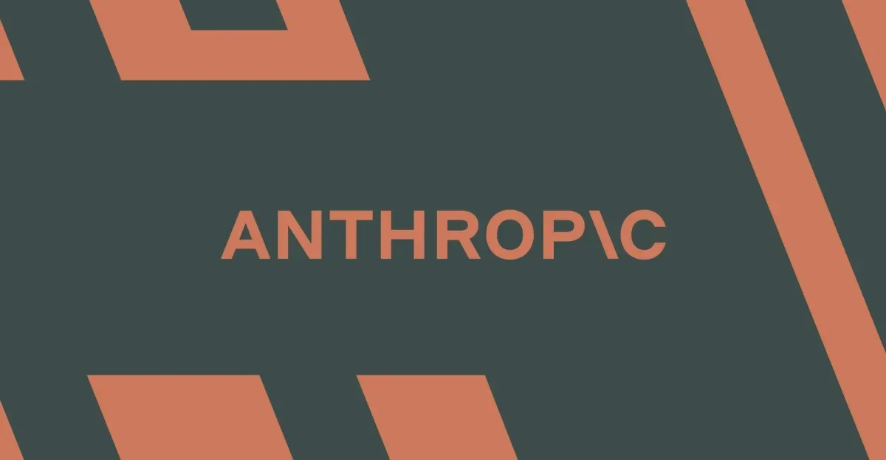

Индустрия
Skydio: как запрет китайских дронов изменил рынок беспилотников и роль ИИ
Глава Skydio о запрете китайских дронов, роли ИИ в обороне и отсутствии «красных линий» для использования БПЛА.
The Verge AI
15 июн. 2026 г.Материалы из источника The Verge AI.
45 материалов
Глава Skydio о запрете китайских дронов, роли ИИ в обороне и отсутствии «красных линий» для использования БПЛА.
США ввели экспортные ограничения на ИИ-модель Mythos от Anthropic из-за подозрений в доступе Китая. что известно?

Amazon сообщила Белому дому об уязвимостях ИИ Anthropic, что привело к блокировке доступа для иностранных граждан.

Один запрос — и приложение для Android готово. Но до релиза пришлось пройти несколько итераций.

Anthropic отключила Fable 5 и Mythos 5 по требованию властей США

Apple добавила ИИ-инструменты для редактирования фото в iOS 27. Разбираем Clean Up, Extend и Spatial Reframing.

Google DeepMind создал кастомные версии Veo и Imagen для короткометражки на Tribeca — пример bespoke-подхода к ИИ в кино.

Siri наконец-то работает: The Verge тестирует новое обновление Apple

Илон Маск стал первым триллионером: IPO SpaceX и орбитальные ИИ-вычисления.

SpaceX вышла на биржу: $150 за акцию, $2 трлн капитализации и первый триллионер в истории

Джефф Безос раскрыл детали Prometheus — ИИ-стартапа с оценкой $41 млрд и амбициями заменить инженеров-проектировщиков.

Крейг Федериги: Siri не льстит и не вступает в романтические отношения — это осознанный выбор Apple.

Amazon впервые раскрыла водопотребление дата-центров: 2,5 млрд галлонов, на 2% меньше, чем годом ранее.

Anthropic извинился за скрытые guardrails в Claude Fable 5 и пообещал прозрачность после скандала с дистилляцией.

Deezer запустила детектор ИИ-музыки, работающий на 20 платформах, включая Spotify и Apple Music.